Case 01 — Straight — MMSI 525100764
✅ Recommended for main figure
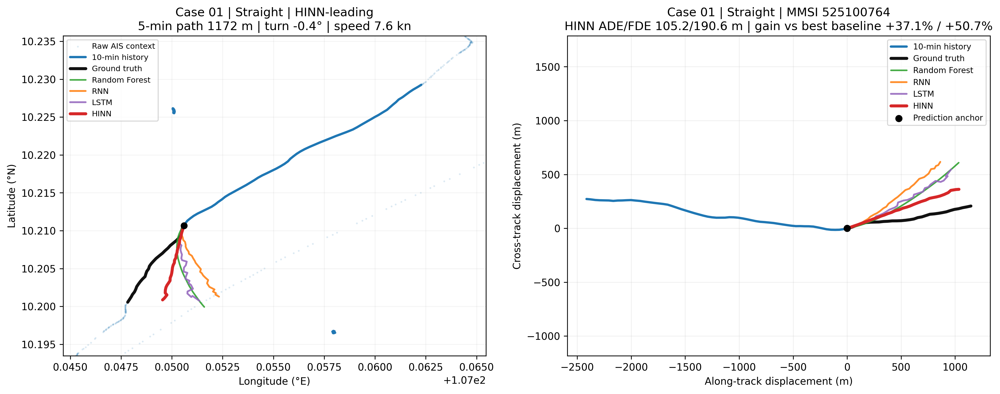
| 5-min path | 1172.0 m | Average speed | 7.59 kn |
|---|---|---|---|
| True turn | -0.37° | Anchor | 10.21067, 107.05060 |
| RF ADE/FDE | 177.8/417.9 m | RNN ADE/FDE | 231.8/498.5 m |
| LSTM ADE/FDE | 167.4/386.7 m | HINN ADE/FDE | 105.2/190.6 m |
| HINN gain vs best baseline | +37.1% ADE | +50.7% FDE | |
| HINN rank | ADE #1 | FDE #1 |
Case 02 — Straight — MMSI 574480000
✅ Recommended for main figure
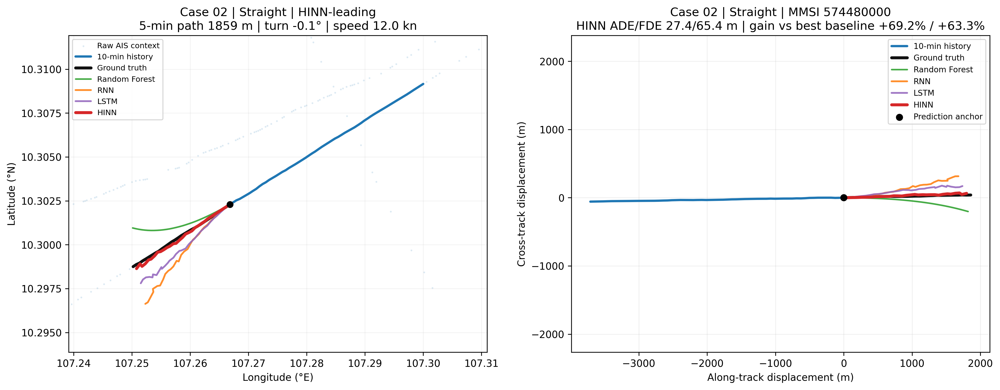
| 5-min path | 1858.7 m | Average speed | 12.04 kn |
|---|---|---|---|
| True turn | -0.12° | Anchor | 10.30229, 107.26681 |
| RF ADE/FDE | 90.6/245.2 m | RNN ADE/FDE | 132.5/328.8 m |
| LSTM ADE/FDE | 88.9/178.4 m | HINN ADE/FDE | 27.4/65.4 m |
| HINN gain vs best baseline | +69.2% ADE | +63.3% FDE | |
| HINN rank | ADE #1 | FDE #1 |
Case 03 — Moderate curve — MMSI 525100764
✅ Recommended for main figure
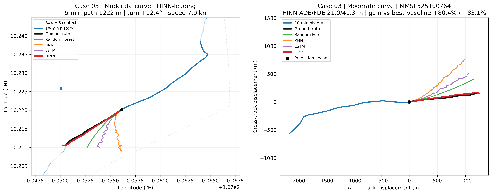
| 5-min path | 1221.7 m | Average speed | 7.92 kn |
|---|---|---|---|
| True turn | +12.39° | Anchor | 10.22014, 107.05614 |
| RF ADE/FDE | 107.4/244.6 m | RNN ADE/FDE | 286.9/636.0 m |
| LSTM ADE/FDE | 167.2/381.1 m | HINN ADE/FDE | 21.0/41.3 m |
| HINN gain vs best baseline | +80.4% ADE | +83.1% FDE | |
| HINN rank | ADE #1 | FDE #1 |
Case 04 — Moderate curve — MMSI 352001126
✅ Recommended for main figure
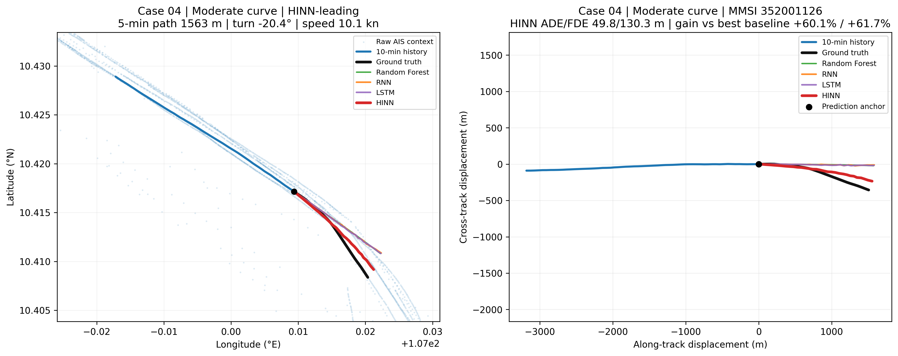
| 5-min path | 1563.0 m | Average speed | 10.13 kn |
|---|---|---|---|
| True turn | -20.40° | Anchor | 10.41715, 107.00937 |
| RF ADE/FDE | 124.9/340.2 m | RNN ADE/FDE | 126.1/353.4 m |
| LSTM ADE/FDE | 125.4/345.6 m | HINN ADE/FDE | 49.8/130.3 m |
| HINN gain vs best baseline | +60.1% ADE | +61.7% FDE | |
| HINN rank | ADE #1 | FDE #1 |
Case 05 — Strong curve — MMSI 229786000
HINN-leading
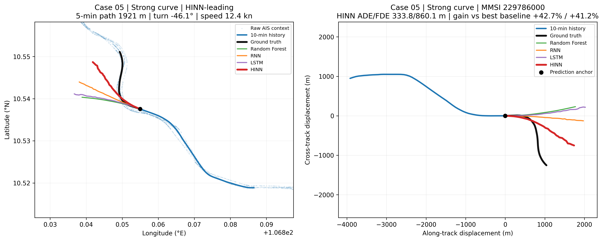
| 5-min path | 1921.4 m | Average speed | 12.45 kn |
|---|---|---|---|
| True turn | -46.09° | Anchor | 10.53756, 106.85495 |
| RF ADE/FDE | 666.6/1656.2 m | RNN ADE/FDE | 582.8/1463.3 m |
| LSTM ADE/FDE | 694.9/1768.9 m | HINN ADE/FDE | 333.8/860.1 m |
| HINN gain vs best baseline | +42.7% ADE | +41.2% FDE | |
| HINN rank | ADE #1 | FDE #1 |
Case 06 — Strong curve — MMSI 525100764
HINN-leading
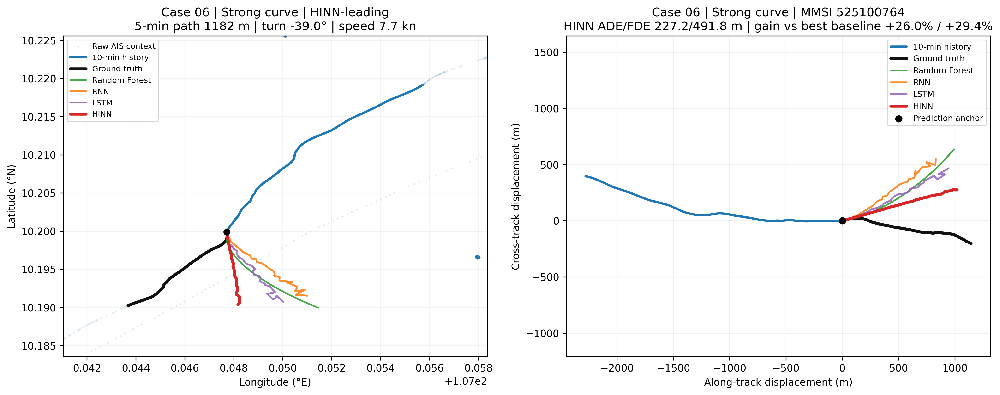
| 5-min path | 1182.2 m | Average speed | 7.66 kn |
|---|---|---|---|
| True turn | -38.98° | Anchor | 10.19989, 107.04771 |
| RF ADE/FDE | 350.4/850.7 m | RNN ADE/FDE | 369.5/815.0 m |
| LSTM ADE/FDE | 307.1/696.8 m | HINN ADE/FDE | 227.2/491.8 m |
| HINN gain vs best baseline | +26.0% ADE | +29.4% FDE | |
| HINN rank | ADE #1 | FDE #1 |
Case 07 — Long-range — MMSI 229786000
HINN-leading
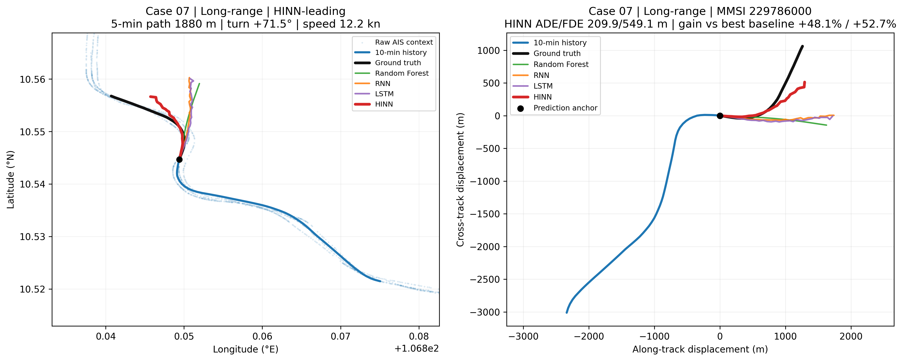
| 5-min path | 1879.7 m | Average speed | 12.18 kn |
|---|---|---|---|
| True turn | +71.55° | Anchor | 10.54468, 106.84940 |
| RF ADE/FDE | 421.1/1260.1 m | RNN ADE/FDE | 404.5/1159.7 m |
| LSTM ADE/FDE | 419.9/1162.0 m | HINN ADE/FDE | 209.9/549.1 m |
| HINN gain vs best baseline | +48.1% ADE | +52.7% FDE | |
| HINN rank | ADE #1 | FDE #1 |
Case 08 — Long-range — MMSI 574480000
✅ Recommended for main figure
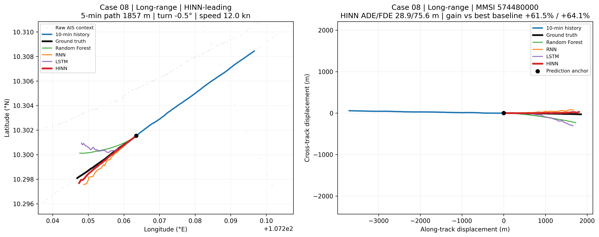
| 5-min path | 1856.9 m | Average speed | 12.03 kn |
|---|---|---|---|
| True turn | -0.48° | Anchor | 10.30154, 107.26348 |
| RF ADE/FDE | 93.0/240.0 m | RNN ADE/FDE | 74.9/210.3 m |
| LSTM ADE/FDE | 104.8/345.4 m | HINN ADE/FDE | 28.9/75.6 m |
| HINN gain vs best baseline | +61.5% ADE | +64.1% FDE | |
| HINN rank | ADE #1 | FDE #1 |
Case 09 — Offshore — MMSI 636018224
✅ Recommended for main figure
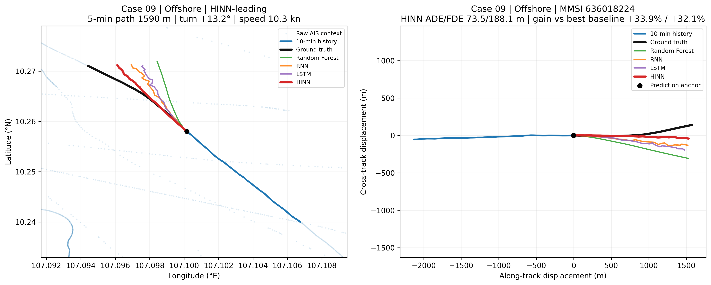
| 5-min path | 1590.1 m | Average speed | 10.30 kn |
|---|---|---|---|
| True turn | +13.17° | Anchor | 10.25801, 107.10015 |
| RF ADE/FDE | 181.8/450.4 m | RNN ADE/FDE | 111.1/277.2 m |
| LSTM ADE/FDE | 127.8/349.5 m | HINN ADE/FDE | 73.5/188.1 m |
| HINN gain vs best baseline | +33.9% ADE | +32.1% FDE | |
| HINN rank | ADE #1 | FDE #1 |
Case 10 — Offshore — MMSI 574480000
✅ Recommended for main figure
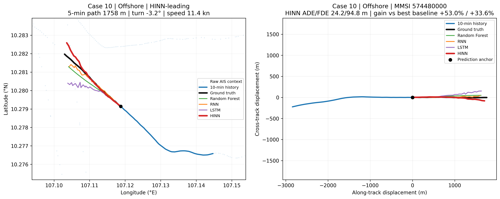
| 5-min path | 1758.0 m | Average speed | 11.39 kn |
|---|---|---|---|
| True turn | -3.17° | Anchor | 10.27914, 107.11877 |
| RF ADE/FDE | 53.2/142.7 m | RNN ADE/FDE | 51.5/165.4 m |
| LSTM ADE/FDE | 72.1/199.7 m | HINN ADE/FDE | 24.2/94.8 m |
| HINN gain vs best baseline | +53.0% ADE | +33.6% FDE | |
| HINN rank | ADE #1 | FDE #1 |
Case 11 — Channel/approach — MMSI 229786000
HINN-leading
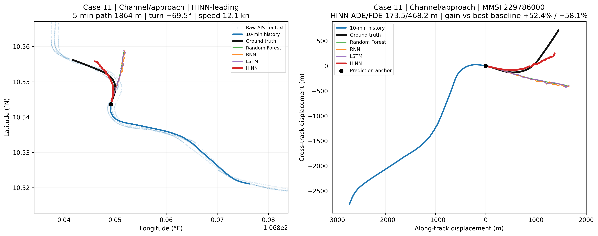
| 5-min path | 1863.8 m | Average speed | 12.08 kn |
|---|---|---|---|
| True turn | +69.45° | Anchor | 10.54363, 106.84923 |
| RF ADE/FDE | 364.3/1118.5 m | RNN ADE/FDE | 374.5/1149.1 m |
| LSTM ADE/FDE | 367.6/1124.8 m | HINN ADE/FDE | 173.5/468.2 m |
| HINN gain vs best baseline | +52.4% ADE | +58.1% FDE | |
| HINN rank | ADE #1 | FDE #1 |
Case 12 — Channel/approach — MMSI 352001126
✅ Recommended for main figure
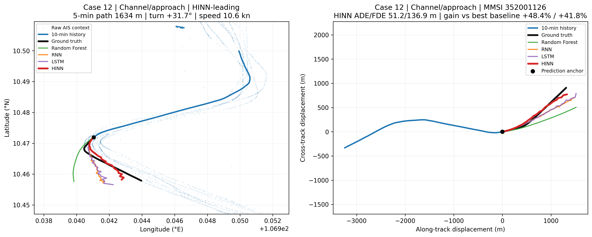
| 5-min path | 1633.6 m | Average speed | 10.58 kn |
|---|---|---|---|
| True turn | +31.74° | Anchor | 10.47192, 106.94105 |
| RF ADE/FDE | 184.1/451.9 m | RNN ADE/FDE | 99.3/269.4 m |
| LSTM ADE/FDE | 100.3/235.3 m | HINN ADE/FDE | 51.2/136.9 m |
| HINN gain vs best baseline | +48.4% ADE | +41.8% FDE | |
| HINN rank | ADE #1 | FDE #1 |
Case 13 — Straight — MMSI 574003030
Near-tie/challenging
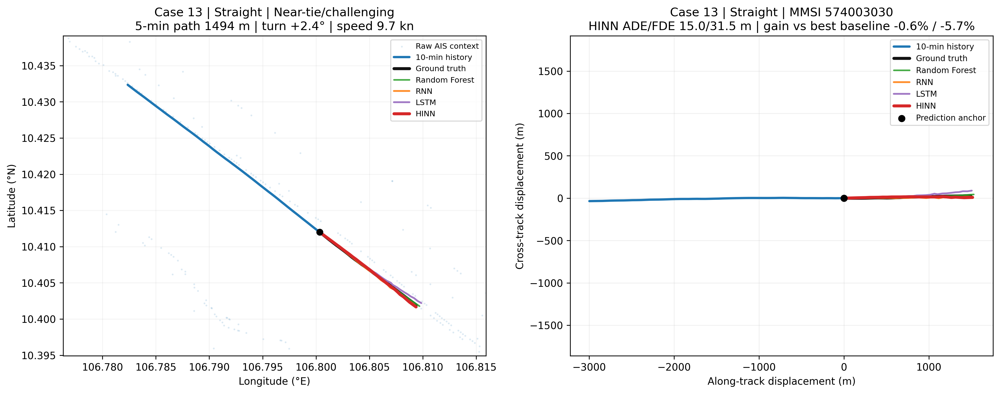
| 5-min path | 1493.7 m | Average speed | 9.68 kn |
|---|---|---|---|
| True turn | +2.41° | Anchor | 10.41201, 106.80033 |
| RF ADE/FDE | 17.7/38.2 m | RNN ADE/FDE | 14.9/29.8 m |
| LSTM ADE/FDE | 22.9/59.2 m | HINN ADE/FDE | 15.0/31.5 m |
| HINN gain vs best baseline | -0.6% ADE | -5.7% FDE | |
| HINN rank | ADE #2 | FDE #2 |
Case 14 — Moderate curve — MMSI 636018224
Near-tie/challenging
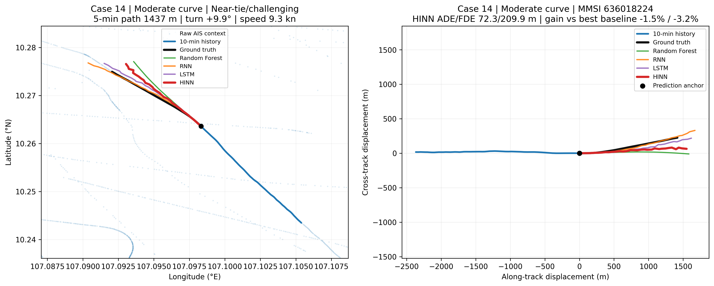
| 5-min path | 1436.9 m | Average speed | 9.31 kn |
|---|---|---|---|
| True turn | +9.91° | Anchor | 10.26360, 107.09832 |
| RF ADE/FDE | 109.9/289.5 m | RNN ADE/FDE | 89.0/275.8 m |
| LSTM ADE/FDE | 71.2/203.4 m | HINN ADE/FDE | 72.3/209.9 m |
| HINN gain vs best baseline | -1.5% ADE | -3.2% FDE | |
| HINN rank | ADE #2 | FDE #2 |
Case 15 — Moderate curve — MMSI 352001126
Near-tie/challenging
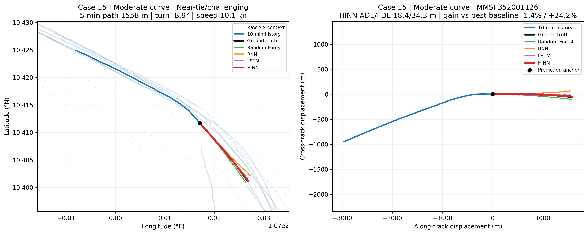
| 5-min path | 1558.3 m | Average speed | 10.10 kn |
|---|---|---|---|
| True turn | -8.89° | Anchor | 10.41169, 107.01707 |
| RF ADE/FDE | 28.8/45.2 m | RNN ADE/FDE | 32.5/123.6 m |
| LSTM ADE/FDE | 18.1/49.4 m | HINN ADE/FDE | 18.4/34.3 m |
| HINN gain vs best baseline | -1.4% ADE | +24.2% FDE | |
| HINN rank | ADE #2 | FDE #1 |
Case 16 — Strong curve — MMSI 229786000
Near-tie/challenging
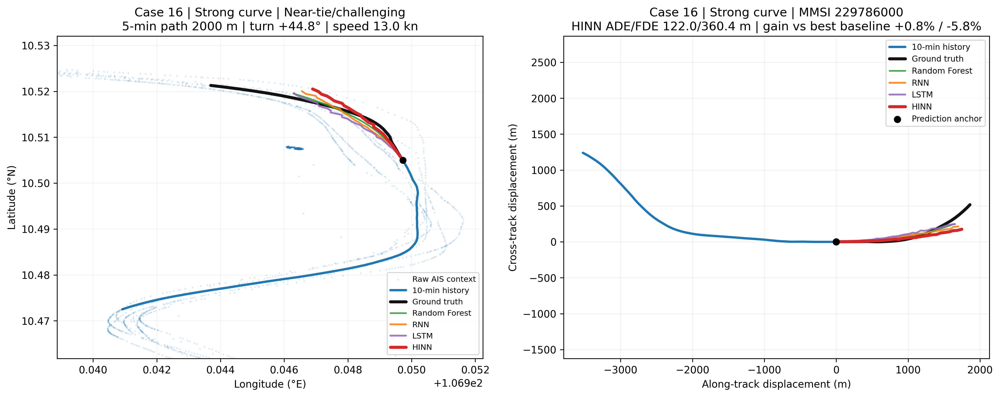
| 5-min path | 2000.2 m | Average speed | 12.96 kn |
|---|---|---|---|
| True turn | +44.81° | Anchor | 10.50497, 106.94972 |
| RF ADE/FDE | 132.0/344.9 m | RNN ADE/FDE | 122.9/342.7 m |
| LSTM ADE/FDE | 135.3/340.8 m | HINN ADE/FDE | 122.0/360.4 m |
| HINN gain vs best baseline | +0.8% ADE | -5.8% FDE | |
| HINN rank | ADE #1 | FDE #4 |
Case 17 — Strong curve — MMSI 574572000
Near-tie/challenging
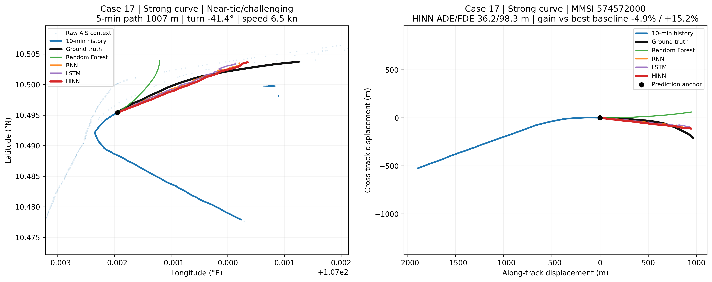
| 5-min path | 1007.1 m | Average speed | 6.53 kn |
|---|---|---|---|
| True turn | -41.36° | Anchor | 10.49541, 106.99805 |
| RF ADE/FDE | 82.5/269.0 m | RNN ADE/FDE | 34.5/115.9 m |
| LSTM ADE/FDE | 41.1/124.7 m | HINN ADE/FDE | 36.2/98.3 m |
| HINN gain vs best baseline | -4.9% ADE | +15.2% FDE | |
| HINN rank | ADE #2 | FDE #1 |
Case 18 — Long-range — MMSI 229786000
Near-tie/challenging
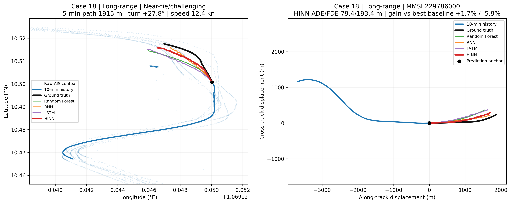
| 5-min path | 1915.0 m | Average speed | 12.41 kn |
|---|---|---|---|
| True turn | +27.83° | Anchor | 10.50077, 106.95003 |
| RF ADE/FDE | 143.4/354.9 m | RNN ADE/FDE | 80.9/182.6 m |
| LSTM ADE/FDE | 140.4/276.2 m | HINN ADE/FDE | 79.4/193.4 m |
| HINN gain vs best baseline | +1.7% ADE | -5.9% FDE | |
| HINN rank | ADE #1 | FDE #2 |
Case 19 — Offshore — MMSI 574480000
Near-tie/challenging
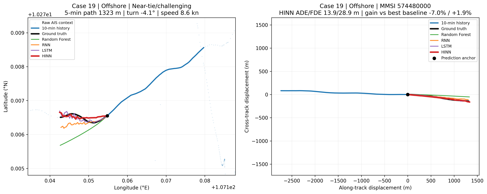
| 5-min path | 1323.1 m | Average speed | 8.57 kn |
|---|---|---|---|
| True turn | -4.09° | Anchor | 10.27655, 107.15479 |
| RF ADE/FDE | 48.3/92.2 m | RNN ADE/FDE | 18.3/35.7 m |
| LSTM ADE/FDE | 13.0/29.4 m | HINN ADE/FDE | 13.9/28.9 m |
| HINN gain vs best baseline | -7.0% ADE | +1.9% FDE | |
| HINN rank | ADE #2 | FDE #1 |
Case 20 — Channel/approach — MMSI 229786000
Near-tie/challenging
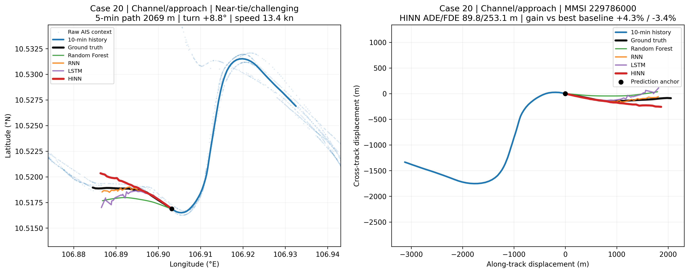
| 5-min path | 2069.2 m | Average speed | 13.41 kn |
|---|---|---|---|
| True turn | +8.76° | Anchor | 10.51688, 106.90319 |
| RF ADE/FDE | 115.0/287.6 m | RNN ADE/FDE | 93.8/244.7 m |
| LSTM ADE/FDE | 106.0/311.0 m | HINN ADE/FDE | 89.8/253.1 m |
| HINN gain vs best baseline | +4.3% ADE | -3.4% FDE | |
| HINN rank | ADE #1 | FDE #2 |